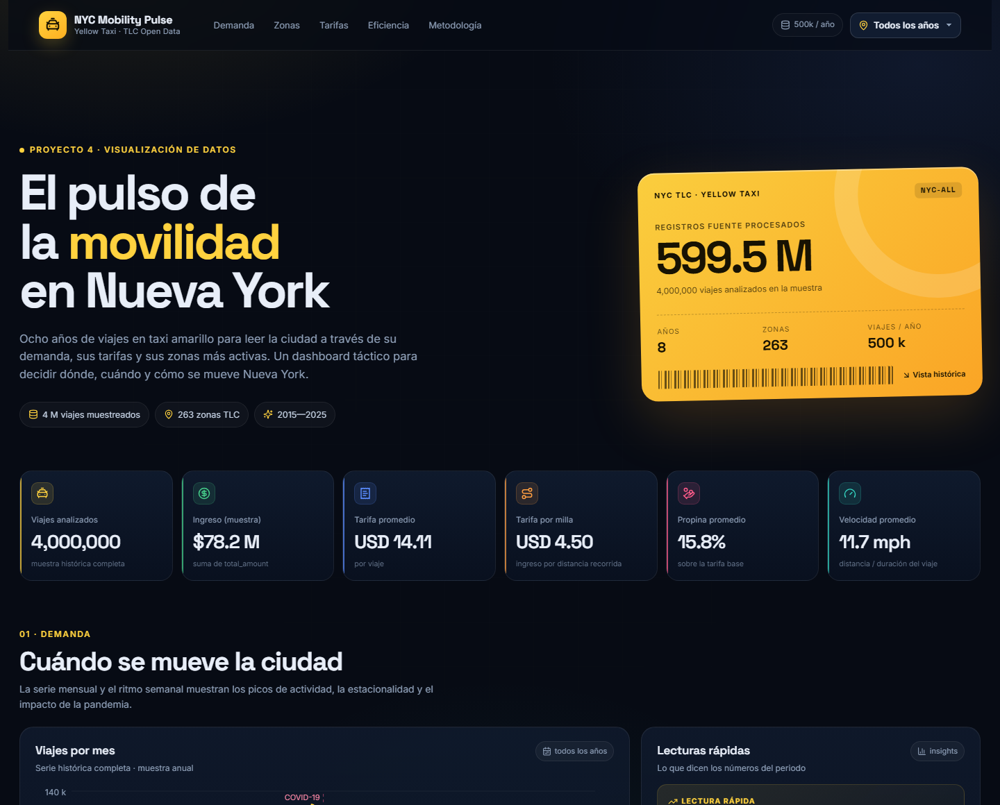
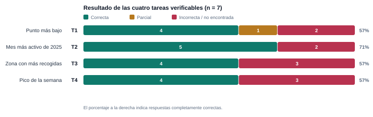
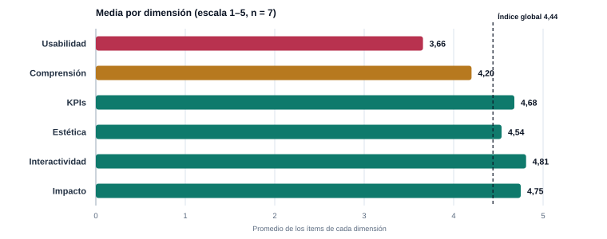
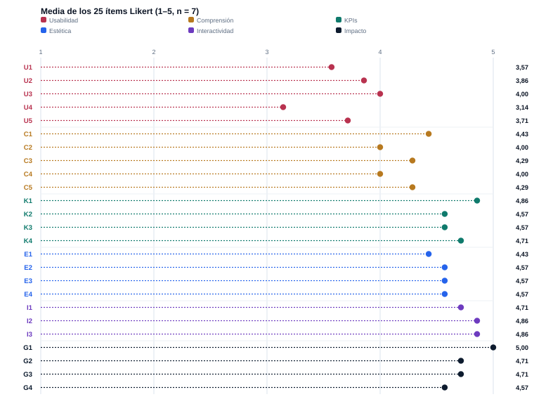
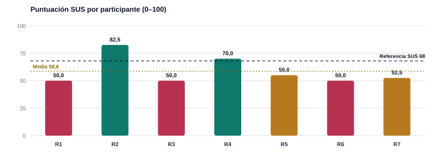

Resumen ejecutivo
La Fase 4 cierra el ciclo de NYC Mobility Pulse. Después de definir la estructura visual, implementar el dashboard y publicarlo, faltaba la prueba que no se puede hacer desde el código: ponerlo frente a personas y observar si informa, si se entiende y si permite responder preguntas concretas. Entre el 19 y el 25 de noviembre de 2026 se aplicó un cuestionario anónimo de 61 preguntas —perfil, cuatro tareas verificables, 25 ítems Likert, la escala SUS y seis preguntas abiertas— a consultores reclutados por conveniencia. Se recibieron 8 respuestas: 7 aceptaron participar y 1 declinó; solo las primeras entran al análisis.
Las cifras cuentan dos historias que no se contradicen. Por un lado, la utilidad percibida es alta: el índice global llega a 4.44/5, el impacto a 4.75 y los KPIs a 4.68; nadie calificó en desacuerdo los ítems de interactividad ni los de impacto. Por otro, la usabilidad es la dimensión más baja (3.66/5) y las tareas revelan el punto exacto donde el tablero deja de acompañar: solo 3 de 7 personas resolvieron las cuatro preguntas sin errores, 2 de 7 no encontraron ninguna y el SUS promedio quedó en 58.6, por debajo de la referencia de 68. El dashboard comunica bien el panorama; encontrar un dato específico cuesta más.
Ficha técnica del entregable
| Elemento | Definición |
|---|---|
| Objeto evaluado | NYC Mobility Pulse · dashboard de movilidad en Nueva York con datos TLC Yellow Taxi |
| URL | https://srmeme64.github.io/nyc-mobility-pulse/ · modo evaluación: ?evaluar=1 |
| Instrumento | 12 secciones · 61 preguntas (54 cerradas, 6 abiertas y 1 consentimiento) · 12–15 min |
| Escalas | Likert 1–5 por ítem · SUS de 10 ítems · cuatro tareas de respuesta corta |
| Aplicación | Google Forms + encuesta guiada embebida en el sitio · anónima, sin correo ni nombre |
| Muestra | 8 respuestas · 7 válidas · 1 declinación · 19 y 25 de noviembre de 2026 |
| Perfil dominante | 18–24 años (85.7%) · Ingeniería en Datos (85.7%) · estudiantes (71.4%) · laptop (100%) |
| Análisis | Descriptivo: medias, medianas, porcentajes, SUS y codificación temática · sin inferencia |
Las cifras se calcularon con docs/fase4/analisis_fase4.py a partir de la
exportación CSV del formulario; las figuras se generan con
docs/fase4/make_figures_fase4.py.
Contenido
| 1 | Introducción: qué se evalúa y cómo se lee este informe | 04 |
| 2 | Diseño del instrumento: secciones, escalas, tareas y SUS | 05 |
| 3 | Aplicación y muestra: quiénes respondieron y en qué condiciones | 07 |
| 4 | Tareas verificables: qué se encontró y qué no | 08 |
| 5 | Percepción por dimensiones: 25 ítems Likert | 10 |
| 6 | Escala SUS: usabilidad estandarizada y sus límites | 12 |
| 7 | Respuestas abiertas: temas, matices y contradicciones | 13 |
| 8 | Hallazgos: qué funciona, qué falla y qué recomendar | 14 |
| 9 | Plan de mejora: prioridades, esfuerzo e impacto | 16 |
| 10 | Limitaciones y validez del estudio | 17 |
| 11 | Conclusiones | 18 |
| 12 | Autoevaluación frente a la rúbrica | 19 |
| A | Anexo: matriz de respuestas, fórmulas y reproducibilidad | 20 |
Cómo está armado
| Bloque | Capítulos | Qué encontrará |
|---|---|---|
| Diseño y aplicación | 1–3 | Preguntas de evaluación, estructura del cuestionario, tareas verificables y perfil de la muestra. |
| Resultados | 4–7 | Desempeño en las tareas, 25 ítems Likert, escala SUS y codificación de las respuestas abiertas. |
| Síntesis | 8–11 | Triangulación de fortalezas y problemas, plan de mejora priorizado, límites y conclusiones. |
| Trazabilidad | 12 y A | Autoevaluación frente a la rúbrica, matriz de respuestas, fórmulas y comandos reproducibles. |
Introducción
Un dashboard puede abrir sin errores, verse bien y aun así no servir para decidir. La evaluación de la Fase 4 existe para detectar esa distancia: la que hay entre lo que el equipo cree que el tablero dice y lo que una persona realmente encuentra, entiende y usa. El objeto evaluado es NYC Mobility Pulse, una aplicación de una sola página que resume ocho años de viajes en taxi amarillo de Nueva York con seis KPIs, once visualizaciones y un mapa de 263 zonas TLC. La pregunta analítica que ordena todo el producto es la misma de las fases anteriores: ¿cuándo, dónde y a qué costo se mueve la ciudad?
La consigna de la fase pide medir seis aspectos —usabilidad, comprensión, pertinencia de los KPIs, estética, interactividad e impacto— con al menos tres personas, y cerrar con promedios, fortalezas, debilidades y recomendaciones. Este informe hace eso y añade una pieza que las encuestas de opinión suelen omitir: cuatro tareas verificables. En lugar de preguntar solo «¿le pareció fácil?», se pidió encontrar el mes más bajo de la serie, el mes más activo de 2025, la zona con más recogidas y la hora pico del heatmap. Las respuestas se compararon con los valores reales del tablero. Esa combinación permite contrastar la percepción con el desempeño.

Las preguntas que guían la evaluación
- Usabilidad: ¿la información se encuentra rápido y los filtros se entienden?
- Comprensión: ¿los títulos, ejes, leyendas y unidades se explican por sí mismos?
- KPIs: ¿los indicadores responden a la pregunta del proyecto y se distingue el principal?
- Estética: ¿los colores, la jerarquía y las proporciones ayudan o distraen?
- Interactividad: ¿los filtros, tooltips y el mapa responden como se espera?
- Impacto: ¿el tablero permite argumentar una decisión o una recomendación?
La evaluación no busca una calificación única. Busca un mapa de fricciones: qué partes del tablero sostienen la lectura y cuáles necesitan una intervención. Por eso el informe separa tres planos que suelen mezclarse: lo que la gente dice (Likert y abiertas), lo que la gente hace (tareas) y lo que el instrumento estandariza (SUS). Cuando los tres coinciden, la conclusión es sólida; cuando no, la discrepancia también es un hallazgo.
Alcance y límites
El estudio es descriptivo y exploratorio. La muestra es pequeña (n = 7), por conveniencia y compuesta en su mayoría por pares de Ingeniería en Datos. No se calculan intervalos de confianza ni pruebas de significancia: con siete casos, cualquier diferencia de una décima puede deberse a una sola persona. Las cifras sirven para detectar direcciones y para priorizar mejoras, no para generalizar a toda la audiencia del tablero. Esa advertencia se repite en el capítulo 10 y condiciona la lectura de todos los promedios.
Tampoco es una auditoría técnica. No se revisó el código, el rendimiento ni la accesibilidad con herramientas automáticas; eso corresponde a otras fases. Aquí se evalúa la experiencia de uso y la comunicación de la información. Finalmente, el estudio se hizo sobre el sitio publicado y el formulario de Google; la encuesta guiada embebida se usó como apoyo, pero las respuestas analizadas son las que llegaron al formulario.
El instrumento
El cuestionario se diseñó para responder a la rúbrica de la fase sin convertir la evaluación en un examen del equipo. Tiene tres capas. La primera describe a la persona —edad, género, formación, experiencia con dashboards y conocimiento de TLC— para poder interpretar sus respuestas. La segunda mide la percepción con 25 ítems Likert agrupados en seis dimensiones y la escala SUS. La tercera pide hacer cuatro tareas y responder seis preguntas abiertas. Las tres capas se aplicaron en el mismo formulario, en ese orden, para que la persona explorara antes de juzgar.
Estructura y pesos
| # | Sección | Preguntas | Qué mide |
|---|---|---|---|
| 1 | Consentimiento | 1 | Participación voluntaria y anónima; «No acepto» cierra el formulario. |
| 2 | Perfil del consultor | 13 | Edad, género, formación, ocupación, experiencia y contexto; incluye P13 para «Otra». |
| 3 | Tareas de uso | 6 | Cuatro respuestas verificables, dificultad percibida y tiempo dedicado. |
| 4 | Usabilidad percibida | 5 | Búsqueda, filtros, recorrido, autonomía y facilidad general. |
| 5 | Comprensión | 5 | Títulos, ejes, leyendas, KPIs y capacidad de concluir. |
| 6 | Pertinencia de los KPIs | 4 | Correspondencia con la pregunta, KPI principal, suficiencia y redundancia. |
| 7 | Estética y coherencia | 4 | Color, jerarquía, tipografía y proporciones. |
| 8 | Interactividad y navegación | 3 | Filtros, tooltips e interacción del mapa. |
| 9 | Impacto y utilidad | 4 | Utilidad, argumentación, confianza y recomendación. |
| 10 | Escala SUS | 10 | Usabilidad estandarizada con ítems alternados en positivo y negativo. |
| 11 | Preguntas abiertas | 6 | Primera mirada, confusión, utilidad, cambios, información faltante y cierre. |
| 12 | Cierre | 0 | Agradecimiento y confirmación de anonimato. |
| Total | 61 | 54 cerradas · 6 abiertas · 1 consentimiento |
Las seis dimensiones
Los 25 ítems Likert se redactaron en primera persona y con una sola idea por enunciado. Se evita la doble negación y se mantiene una dirección positiva: a mayor puntuación, mejor percepción. La escala va de 1 = totalmente en desacuerdo a 5 = totalmente de acuerdo. Cada ítem es una pregunta independiente de escala lineal, no una cuadrícula; esa decisión —que parece técnica— permite prellenar el formulario desde el sitio y evita que una fila mal contestada arrastre a las demás.
| Dimensión | Ítems | Qué pregunta | Ejemplo |
|---|---|---|---|
| Usabilidad | 5 | Encontrar, filtrar, recorrer y moverse sin ayuda. | U4. No necesité ayuda externa para moverme por el tablero. |
| Comprensión | 5 | Entender títulos, ejes, leyendas, KPIs y conclusiones. | C2. Los ejes, leyendas y unidades se entienden sin explicación adicional. |
| KPIs | 4 | Pertinencia, jerarquía, suficiencia y no redundancia. | K1. Los KPIs responden a la pregunta «cuándo, dónde y a qué costo». |
| Estética | 4 | Color, jerarquía visual, tipografía y proporciones. | E2. La jerarquía visual indica qué mirar primero. |
| Interactividad | 3 | Filtros, tooltips y mapa. | I1. Los filtros actualizan los datos de forma correcta y visible. |
| Impacto | 4 | Utilidad, argumentación, confianza y recomendación. | G2. Me permitiría argumentar una decisión o una recomendación. |
Las cuatro tareas y sus respuestas de referencia
Las tareas no son preguntas de opinión: tienen una respuesta correcta que se verificó contra
public/data/dashboard.json, la misma fuente que alimenta el tablero. Se eligieron cuatro
operaciones distintas —leer una serie, cambiar un filtro, localizar una zona y cruzar día con hora— para
cubrir los tres tipos de visualización principales. La persona podía responder NO ENCONTRADA;
esa salida no se trata como un dato perdido, sino como evidencia de que la información no se localizó.
| Tarea | Pregunta | Respuesta de referencia | Fuente |
|---|---|---|---|
| T1 | En la serie histórica (filtro «Todos»), ¿en qué año y mes se registra el punto más bajo de viajes? | Abril de 2020 · 4,702 viajes | Serie mensual |
| T2 | Con el filtro en 2025, ¿cuál es el mes con más viajes? | Octubre de 2025 · 46,007 viajes | Serie mensual |
| T3 | Con el filtro en 2025, ¿cuál es la zona con más recogidas? | Upper East Side South · 22,392 recogidas | Mapa / ranking |
| T4 | Con el filtro en 2025, en el heatmap de día y hora, ¿cuál es el día y la hora de mayor demanda? | Miércoles a las 18:00 · 5,261 viajes | Heatmap |
La corrección es gradual: 1 punto si la respuesta es completa, 0.5 si
acierta una parte —por ejemplo, el mes pero no el año— y 0 si no la encuentra o se equivoca.
El máximo es 4 puntos por persona. En la versión embebida, el sitio aplica la misma regla y devuelve un
veredicto inmediato con la respuesta correcta y un enlace a la sección; en el formulario, la corrección se
hizo después, con la misma lógica programada en src/lib/survey.ts.
La escala SUS
El SUS se incluyó porque es la escala de usabilidad más usada y permite comparar el resultado con una referencia externa. Son diez afirmaciones, cinco en positivo y cinco en negativo, con la misma escala 1–5. La puntuación se calcula con la fórmula estándar: a los ítems impares se les resta 1; a los pares se les resta su valor de 5; se suman los diez resultados y se multiplica por 2.5. El resultado va de 0 a 100. Un valor de 68 se considera el promedio de la industria; por encima de 80 es excelente y por debajo de 52, pobre. La escala se interpreta junto con las demás evidencias, nunca sola.
Anonimato, consentimiento y aplicación
El formulario no pide nombre, correo ni teléfono, y no limita a una respuesta por persona. El equipo asignó códigos R1–R7 después de recibir las respuestas; esos códigos son los únicos identificadores que aparecen en este informe. La primera pregunta es el consentimiento: quien elige «No acepto» cierra el formulario y no deja respuestas. La encuesta embebida reproduce la misma lógica y borra el borrador local cuando se declina. La aplicación fue voluntaria y sin incentivos.
Se ofrecieron dos caminos equivalentes: el formulario de Google y la guía asistida dentro del sitio, que valida las tareas y al final abre el formulario con las respuestas precargadas. Las respuestas analizadas provienen del formulario; la guía se usó como apoyo para que la persona supiera qué hacer sin explicarle el dashboard. Esa distinción importa: el estudio evalúa el tablero, no la habilidad de seguir instrucciones del equipo.
Quiénes respondieron
La aplicación se hizo en dos momentos: una respuesta el 19 de noviembre por la noche y seis el 25 de noviembre por la tarde, hora local de Ciudad de México (GMT-5). La invitación se envió por conveniencia a personas con formación o interés en datos; no se explicó el dashboard antes de la prueba, solo su propósito general. Cada persona exploró por su cuenta, respondió las cuatro tareas y luego contestó el cuestionario. Una persona abrió el formulario y eligió «No acepto»; sus respuestas se excluyen y no se usan para calcular ningún promedio.
Perfil de la muestra
| Variable | Categoría | n | % |
|---|---|---|---|
| Edad | 18 a 24 años | 6 | 85.7 |
| 25 a 34 años | 1 | 14.3 | |
| Género | Masculino | 5 | 71.4 |
| Femenino | 2 | 28.6 | |
| Nivel académico | Licenciatura en curso | 6 | 85.7 |
| Licenciatura concluida | 1 | 14.3 | |
| Formación | Ingeniería en Datos | 6 | 85.7 |
| Otra (Gestión de Desarrollo Turístico) | 1 | 14.3 | |
| Ocupación | Estudiante | 5 | 71.4 |
| Docente | 1 | 14.3 | |
| Otra (desempleado) | 1 | 14.3 | |
| Experiencia con dashboards | Alta | 3 | 42.9 |
| Media | 2 | 28.6 | |
| Baja | 2 | 28.6 | |
| Frecuencia de uso | Semanalmente | 3 | 42.9 |
| Mensualmente | 3 | 42.9 | |
| Nunca | 1 | 14.3 | |
| Conocimiento de TLC | Ninguno | 5 | 71.4 |
| Conoce el dataset y sus variables | 2 | 28.6 | |
| Familiaridad con NYC | La conoce por mapas o referencias | 4 | 57.1 |
| No la conoce | 2 | 28.6 | |
| La ha visitado | 1 | 14.3 | |
| Dispositivo | Laptop o computadora de escritorio | 7 | 100.0 |
| Evaluó antes un dashboard | Sí | 5 | 71.4 |
| No | 2 | 28.6 |
La muestra es homogénea y experta en datos, pero novata en el dominio. Ocho de cada diez personas estudian Ingeniería en Datos y casi la mitad usa dashboards con frecuencia; sin embargo, siete de cada diez no conocían el dataset de TLC y solo una había visitado Nueva York. Esa combinación es útil para evaluar la interfaz: son personas acostumbradas a leer gráficos, pero no al negocio de la movilidad. También explica parte de los resultados: los KPIs y la estética reciben puntuaciones altas porque el lenguaje visual les resulta familiar; las tareas de localización revelan lo que el conocimiento del dominio no compensa.
El perfil cumple el requisito de la fase —mínimo tres personas, con edad, nivel educativo y experiencia documentados—, pero no representa al público general. No hay participantes de 35 años o más, no hay móviles y no hay perfiles sin formación técnica. Las conclusiones se leen como una primera validación con pares, no como un estudio de mercado. El capítulo 10 retoma esta advertencia.
Condiciones de aplicación
| Aspecto | Registro |
|---|---|
| Fechas | 19 y 25 de noviembre de 2026 |
| Modalidad | Remota, sin observación directa; formulario de Google y guía embebida opcional |
| Consentimiento | Primera pregunta; «No acepto» cierra el formulario sin registrar datos |
| Anonimato | Sin nombre, correo ni teléfono; códigos R1–R7 asignados por el equipo |
| Incentivos | Ninguno |
| Duración estimada | 12–15 minutos; el 57.1% reportó entre 5 y 10 minutos en las tareas |
| Dispositivo | 100% laptop o computadora de escritorio |
| Respuestas recibidas | 8 · 7 válidas · 1 declinación |
Las tareas verificables
Las cuatro tareas se eligieron para recorrer el tablero de arriba abajo: una serie temporal, un filtro de año, una zona del mapa y un cruce de día y hora. Todas tienen una respuesta única y verificable. La persona podía escribir NO ENCONTRADA si no la hallaba; esa respuesta se conserva como dato porque indica un fallo de localización, no un formulario incompleto. La corrección se aplicó con la misma regla que usa la encuesta embebida: 1 punto si la respuesta es completa, 0.5 si acierta una parte y 0 si no la encuentra o se equivoca.
| Tarea | Respuesta de referencia | Correctas | Parciales | Incorrectas | Acierto | Media |
|---|---|---|---|---|---|---|
| T1 | Abril de 2020 · 4,702 viajes | 4 | 1 | 2 | 57.1% | 0.64 |
| T2 | Octubre de 2025 · 46,007 viajes | 5 | 0 | 2 | 71.4% | 0.71 |
| T3 | Upper East Side South · 22,392 recogidas | 4 | 0 | 3 | 57.1% | 0.57 |
| T4 | Miércoles a las 18:00 · 5,261 viajes | 4 | 0 | 3 | 57.1% | 0.57 |
| Total del conjunto | 17 | 1 | 10 | 62.5% | 2.50 / 4 |

El resultado global es 2.5 de 4 puntos (62.5% de los puntos posibles), con una desviación estándar de 1.71: la media esconde dos extremos. Tres personas resolvieron las cuatro tareas sin errores; dos no encontraron ninguna y respondieron «NO ENCONTRADA» en las cuatro; una tercera encontró dos y falló en las otras dos; la última acertó tres y dejó una parcial. La distribución no es un gradiente: es una división entre quienes lograron orientarse y quienes se quedaron sin punto de entrada. Esa forma —más que el promedio— es la que importa para el diseño.
Qué tarea costó más y por qué
T2 fue la más fácil (5 de 7 correctas). El mes con más viajes se lee en la serie mensual después de cambiar el filtro a 2025; es una operación de un solo paso y el pico es visualmente evidente. T1 también se resolvió en cuatro casos, pero exigía mirar la serie completa y distinguir el mínimo de la pandemia; una persona escribió «20/04», que acierta el mes pero no el año, y dos no lo encontraron. T3 y T4 empatan en 4 de 7: requieren pasar de la serie al mapa o al heatmap, cambiar el filtro y leer una celda o una zona. Son las tareas que más dependen de saber dónde está la respuesta, no solo de saber leer un gráfico.
| Indicador | Resultado | Lectura |
|---|---|---|
| Personas con 4/4 | 3 de 7 (42.9%) | Un tercio del grupo completó el recorrido sin errores. |
| Personas con 0/4 | 2 de 7 (28.6%) | Dos personas no localizaron ninguna respuesta y usaron «NO ENCONTRADA» en todo. |
| Dificultad percibida | 2.29 / 5 | 1 = muy difícil, 5 = muy fácil; 4 de 7 calificaron entre 1 y 2. |
| Tiempo dedicado | 5–10 min (4), 2–5 min (2), más de 10 min (1) | La mayoría terminó en el rango previsto; una persona necesitó más de 10 minutos. |
| Correlación dificultad–puntaje | No concluyente | Quienes fallaron no siempre se sintieron perdidos; una persona con 0/4 calificó la dificultad con 2. |
La percepción de dificultad (2.29/5) es coherente con el desempeño, pero no idéntica: la persona que respondió «NO ENCONTRADA» en todo y calificó la dificultad con 1 (muy difícil) y la que también falló todo pero la calificó con 2 muestran que el fracaso se vive de formas distintas. Una se rinde rápido; la otra insiste y no encuentra. El dato que las une es el mismo: el tablero no les dio una pista de dónde buscar. Ese es el hueco que la guía de evaluación intenta cubrir y que las recomendaciones del capítulo 8 retoman.
Las seis dimensiones
Los 25 ítems Likert se respondieron después de las tareas, cuando la persona ya había recorrido el tablero. La escala va de 1 (totalmente en desacuerdo) a 5 (totalmente de acuerdo). Para cada dimensión se calculó la media de todos sus ítems, la mediana y el porcentaje de respuestas de acuerdo (4 o 5). La mediana y el porcentaje ayudan a leer una muestra pequeña: si tres personas responden 5 a casi todo, la media sube aunque el resto tenga dudas; la mediana y el acuerdo muestran cuántas personas sostienen esa puntuación.
| Dimensión | Ítems | Media | Mediana | Acuerdo | Lectura |
|---|---|---|---|---|---|
| Interactividad | 3 | 4.81 | 5.0 | 100.0% | Filtros, tooltips y mapa responden; nadie en desacuerdo. |
| Impacto | 4 | 4.75 | 5.0 | 100.0% | El tablero se percibe útil, confiable y recomendable. |
| KPIs | 4 | 4.68 | 5.0 | 96.4% | Responden a la pregunta y no se perciben redundantes. |
| Estética | 4 | 4.54 | 5.0 | 92.9% | Color, jerarquía, tipografía y proporciones funcionan. |
| Comprensión | 5 | 4.20 | 4.0 | 77.1% | Buena, con dudas en ejes, leyendas y escala del mapa. |
| Usabilidad | 5 | 3.66 | 3.0 | 48.6% | La más baja: encontrar y moverse sin ayuda cuesta. |
| Índice global | 25 | 4.44 | 4.5 | 85.7% | Promedio de las seis dimensiones. |

El patrón es claro: las dimensiones que dependen de reconocer —color, jerarquía, interactividad, utilidad— están en la parte alta; las que dependen de buscar y orientarse —usabilidad, y en parte comprensión— están abajo. No es un problema de gusto: es un problema de navegación. La gente valora lo que ve cuando lo encuentra; el costo aparece antes, en el trayecto. Esa lectura es consistente con las tareas del capítulo 4 y con los comentarios del capítulo 7.
Los 25 ítems, uno por uno
| Ítem | Enunciado | Media | Mediana | Acuerdo |
|---|---|---|---|---|
| U1 | Encontré rápidamente la información que buscaba. | 3.57 | 3.0 | 42.9% |
| U2 | Los filtros y botones son intuitivos. | 3.86 | 4.0 | 57.1% |
| U3 | El recorrido de la página va de lo general a lo particular. | 4.00 | 4.0 | 57.1% |
| U4 | No necesité ayuda externa para moverme por el tablero. | 3.14 | 3.0 | 28.6% |
| U5 | En general, el tablero es fácil de usar. | 3.71 | 4.0 | 57.1% |
| C1 | Los títulos de las secciones anuncian con claridad su contenido. | 4.43 | 5.0 | 85.7% |
| C2 | Los ejes, leyendas y unidades se entienden sin explicación adicional. | 4.00 | 4.0 | 71.4% |
| C3 | Entendí qué mide cada KPI sin consultar la metodología. | 4.29 | 4.0 | 85.7% |
| C4 | El mapa y su escala de color se explican por sí mismos. | 4.00 | 4.0 | 71.4% |
| C5 | Pude formular al menos una conclusión propia sobre la movilidad de Nueva York. | 4.29 | 5.0 | 71.4% |
| K1 | Los KPIs responden a la pregunta «cuándo, dónde y a qué costo». | 4.86 | 5.0 | 100.0% |
| K2 | Identifiqué con facilidad el KPI más importante. | 4.57 | 5.0 | 85.7% |
| K3 | Los indicadores son suficientes para describir el fenómeno. | 4.57 | 5.0 | 100.0% |
| K4 | Los indicadores son distintos entre sí, sin redundancias evidentes. | 4.71 | 5.0 | 100.0% |
| E1 | Los colores ayudan a interpretar los datos. | 4.43 | 5.0 | 85.7% |
| E2 | La jerarquía visual indica qué mirar primero. | 4.57 | 5.0 | 100.0% |
| E3 | La tipografía es legible en pantalla. | 4.57 | 5.0 | 100.0% |
| E4 | Los tamaños y proporciones de los gráficos son adecuados. | 4.57 | 5.0 | 85.7% |
| I1 | Los filtros actualizan los datos de forma correcta y visible. | 4.71 | 5.0 | 100.0% |
| I2 | Los tooltips aportan información útil. | 4.86 | 5.0 | 100.0% |
| I3 | La interacción del mapa (zoom, clic y selección) es comprensible. | 4.86 | 5.0 | 100.0% |
| G1 | El tablero aporta información útil sobre la movilidad de Nueva York. | 5.00 | 5.0 | 100.0% |
| G2 | Me permitiría argumentar una decisión o una recomendación. | 4.71 | 5.0 | 100.0% |
| G3 | La información es confiable y está bien documentada. | 4.71 | 5.0 | 100.0% |
| G4 | Recomendaría el tablero a alguien interesado en movilidad urbana. | 4.57 | 5.0 | 100.0% |

El ítem más bajo es U4 («No necesité ayuda externa», 3.14): solo 2 de 7 estuvieron de acuerdo, 4 se quedaron en el punto medio y 1 en desacuerdo. Le sigue U1 («Encontré rápidamente la información», 3.57), con 3 de acuerdo, 3 neutrales y 1 en desacuerdo. En el otro extremo, G1 recibe 5.0 de las siete personas y K1, I2 e I3 llegan a 4.86. La distancia entre «es fácil de usar» (U5, 3.71) y «no necesité ayuda» (U4, 3.14) es la grieta más útil del capítulo: el tablero se aprende, pero no se explica solo.
La comprensión queda en un punto intermedio (4.20). Los títulos de sección (C1, 4.43) y la idea de cada KPI (C3, 4.29) se entienden; las dudas aparecen en los ejes y leyendas (C2, 4.0) y en la escala de color del mapa (C4, 4.0). No son fallos graves, pero son los mismos elementos que mencionan las respuestas abiertas: «Viajes por mes» y la lectura del mapa. La estética, en cambio, no aparece como problema en ningún ítem (4.43–4.57) y la interactividad es la dimensión mejor valorada (4.81).
El SUS: 58.6
El SUS se incluyó para tener una medida comparable con otros productos. Son diez afirmaciones, cinco positivas y cinco negativas, con la misma escala 1–5. La fórmula estándar convierte las respuestas en una puntuación de 0 a 100: a los ítems impares se les resta 1, a los pares se les resta su valor de 5, se suman los diez resultados y se multiplica por 2.5. Un producto con usabilidad promedio obtiene alrededor de 68; por encima de 80 es excelente y por debajo de 52, pobre. El resultado de NYC Mobility Pulse es 58.6 (mediana 52.5, desviación estándar 11.8).
| Código | Perfil breve | Tareas | Índice | SUS | Lectura |
|---|---|---|---|---|---|
| R1 | 18–24, formación en turismo, sin experiencia en dashboards | 4.0 | 4.70 | 50.0 | 5 en los diez ítems SUS |
| R2 | 18–24, Ingeniería en Datos, experiencia media | 4.0 | 4.35 | 82.5 | El SUS más alto |
| R3 | 18–24, Ingeniería en Datos, experiencia baja | 2.0 | 4.60 | 50.0 | 5 en los diez ítems SUS |
| R4 | 25–34, docente de Ingeniería en Datos, experiencia alta | 0.0 | 4.10 | 70.0 | Por encima de 68 |
| R5 | 18–24, Ingeniería en Datos, experiencia alta | 0.0 | 4.22 | 55.0 | Aceptable, con reservas |
| R6 | 18–24, Ingeniería en Datos, experiencia media | 4.0 | 5.00 | 50.0 | 5 en los diez ítems SUS |
| R7 | 18–24, Ingeniería en Datos, experiencia alta | 3.5 | 4.11 | 52.5 | Aceptable, cerca del límite |
| Media | 7 consultores | 2.50 | 4.44 | 58.6 | — |

La distribución es bimodal: un participante supera la referencia (R2, 82.5), otro se acerca (R4, 70) y cinco quedan por debajo de 68. Pero el dato más importante no es la media, sino el patrón de respuesta. R1, R3 y R6 contestaron 5 en los diez ítems, incluidos los negativos («encontré el tablero innecesariamente complejo», «necesitaría apoyo técnico», «demasiada inconsistencia»). Esa combinación es internamente contradictoria: si todo es 5, el SUS interpreta que el producto es difícil en la mitad de los ítems y asigna 50. No es que el tablero sea exactamente regular para esas personas; es que el patrón no permite distinguir. Lo mismo ocurre con los Likert: el efecto techo y la línea recta conviven.
Si se excluyen las tres respuestas con línea recta, la media del SUS sube a 65.0 (n = 4: 82.5, 70, 55 y 52.5), todavía por debajo de 68. Si se excluye solo a R1 —la respuesta con campos abiertos no informativos—, la media es 60.0 (n = 6). En ningún escenario el SUS alcanza la referencia, pero el rango 58.6–65.0 es más honesto que una cifra única. La conclusión razonable es que el SUS no es concluyente: apunta a una usabilidad por debajo del promedio, pero el instrumento se aplicó con un patrón de respuesta que lo distorsiona. Se recomienda repetirlo con un ítem de atención, una instrucción más explícita sobre los ítems negativos y, si es posible, una versión observada.
Lo que dicen las palabras
Las seis preguntas abiertas se analizaron con un criterio de análisis temático simple: se leyó cada respuesta, se asignó a una categoría y se contaron las menciones. No se busca saturación teórica ni se construyó un libro de códigos formal; con siete personas, el objetivo es identificar patrones y conservar el lenguaje literal. Las respuestas de R1 —seis letras «a»— no aportan contenido y se excluyen de la codificación, aunque su perfil y sus escalas se mantienen en el análisis cuantitativo. Se conservan las citas textuales, sin corregir la ortografía, para no borrar la voz de quien respondió.
| Tema | Menciones | Qué aparece | Ejemplo |
|---|---|---|---|
| Primera mirada | 6 | KPIs y tarjetas (3), portada o título (2), ticket de datos (1). | «Las tarjetas con los KPIs.» (R6) |
| Lo más útil | 7 | Mapa o geografía (2), KPIs (2), heatmap (1), tarifa por milla (1), todo (1). | «Geografía de la demanda por cómo se puede interactuar y se ve.» (R4) |
| Confusión | 6 | «Viajes por mes» (1), muestra de 500,000 (1), mapa (1), «Ritmo semanal» (1), las tareas de la evaluación (1), ninguna (1). | «“Viajes por mes”, me confundió la forma de clasificar los meses.» (R7) |
| Cambios | 6 | Año junto a cada gráfico (1), menú principal (1), unificar nombres formulario–tablero (1), nada (3). | «Agregar un menú principal para dividir las secciones.» (R4) |
| Información faltante | 5 | Taxistas disponibles y tiempo de espera (1), más guía para las tareas (1), nada o «está bien» (2), sin respuesta (2). | «Conocer el número de taxis disponibles y el tiempo de espera por zona y hora.» (R2) |
| Tono de cierre | 4 | Positivo o de agradecimiento (3), «ninguno» (1), sin respuesta (3). | «Gracias por un dashboard tan trabajado y de una calidad tan alta.» (R7) |
La primera impresión: los KPIs y la portada
Seis personas describieron dónde pusieron los ojos al abrir el tablero. Tres mencionaron las tarjetas de KPIs; dos, la portada o el título; una, el ticket de datos. Ese resultado es una buena noticia para la jerarquía visual: el primer golpe de vista coincide con lo que el diseño quería destacar. R2 lo explica con una lógica de analista: «Lo primero que miré fue la tarjeta de viajes analizados. Me sirvió para ubicar el tamaño de la muestra antes de explorar la demanda por año y por zona». R7 lo dice desde la intuición: «El KPI principal, porque es lo más llamativo de base». La portada y el ticket cumplen su función de anclaje.
Lo que se valora: mapa, heatmap y guías de lectura
Las visualizaciones más mencionadas como útiles son el mapa de zonas y el heatmap, seguidas por los KPIs y la tarifa por milla. R2 encontró en el heatmap una aplicación concreta: «Me permitió identificar que en 2025 el pico de la muestra fue el miércoles a las 18:00. Esa visualización serviría para planear turnos con base en las horas de mayor demanda». R4 valoró la geografía «por cómo se puede interactuar y se ve». La guía de lectura y la metodología también recibieron elogios explícitos: «Me gustó que cada gráfica incluyera una guía de lectura y que la metodología explicara los años faltantes y el pico atípico de marzo de 2018» (R2). Ese es el tipo de comentario que valida una decisión de diseño, no solo un gusto.
Las fricciones: nombres, muestras y puntos de entrada
Las quejas no son sobre el color ni sobre la calidad de los datos. Son sobre orientación. R7 se perdió en la clasificación de los meses de «Viajes por mes»; R2 tardó en entender que cada año muestra 500,000 viajes y que ese número es una muestra, no el total de la fuente; R4 encontró confuso «Ritmo semanal»; R3 señaló el mapa; y R6 dijo que lo que le resultó confuso fue «el examen que acaban de hacer», es decir, las tareas de la propia evaluación. Cada comentario apunta a un punto de entrada distinto, pero comparten una causa: el tablero no siempre dice qué se está mirando ni cómo se relaciona con lo que se pide.
Lo que falta y lo que se cambiaría
Las propuestas son concretas y de bajo costo: poner el año seleccionado junto al título de cada gráfico (R2), añadir un menú principal para dividir las secciones (R4), unificar el vocabulario entre el formulario y el tablero (R3) y dar más intuición para resolver las tareas (R3). Tres personas no cambiarían nada y dos consideran que la información faltante es «ninguna» o «está bien». La única petición de datos nuevos es la de R2: número de taxis disponibles y tiempo de espera por zona y hora para decidir dónde asignar más unidades. Es una demanda legítima, pero exige una fuente que el dataset de TLC no contiene; el tablero puede declarar esa ausencia en lugar de simular una oferta que no mide.
También hay contradicciones productivas. R4 encontró confuso el heatmap, mientras que R2 lo consideró la visualización más útil. R7 se perdió en «Viajes por mes» pero calificó los KPIs con 5. R3 dijo que el mapa le resultó confuso y, aun así, valoró «todos en general bien». Esas diferencias no invalidan los datos: muestran que el mismo elemento puede funcionar para un perfil y fallar para otro. La recomendación no es eliminar el heatmap ni el mapa, sino añadir una capa de entrada —una leyenda, una nota, un ejemplo— que reduzca la dependencia del conocimiento previo.
Qué funciona, qué falla y qué recomendar
Este capítulo cruza las tres fuentes —tareas, escalas y comentarios— para separar lo que se sostiene con más de una evidencia de lo que es una impresión aislada. La regla es simple: una fortaleza o un problema entra en la lista solo si aparece en al menos dos planos. Con n = 7, la triangulación es la mejor defensa contra el azar de una respuesta.
Aspectos que funcionan bien
- La jerarquía visual y la primera impresión. E2 y E3 reciben 4.57 y el 100% de acuerdo; tres personas mencionaron los KPIs como primera mirada. El tablero dice dónde empezar.
- La utilidad percibida y la confianza. G1 obtiene 5.0, G2 y G3 4.71, y el impacto promedia 4.75. El tablero se percibe como una base para argumentar, no como un adorno.
- La pertinencia de los KPIs. K1, K3 y K4 superan 4.5; el 96.4% de los ítems de la dimensión están en 4 o 5. Los indicadores responden a la pregunta del proyecto.
- La interactividad. I1, I2 e I3 promedian 4.81; nadie calificó por debajo de 4. Los filtros, los tooltips y el mapa responden como se espera.
- Las guías de lectura y la metodología. R2 las elogia explícitamente; la comprensión de los KPIs (C3, 4.29) y la capacidad de concluir (C5, 4.29) son consistentes con ese apoyo.
Problemas detectados
- La búsqueda de un dato específico no es inmediata. U1 (3.57), U4 (3.14), las tareas (2.5/4) y el SUS (58.6) apuntan al mismo lugar: encontrar cuesta. Dos personas no localizaron ninguna respuesta.
- El vocabulario no coincide entre el formulario y el tablero. R3 lo dice de forma directa; la tarea T3 usa «zona con más recogidas» y el tablero habla de «geografía» y «ranking». La persona tiene que traducir.
- La serie mensual necesita más contexto. R2 tardó en entender la muestra de 500,000 por año; R7 se perdió con la clasificación de los meses. C2 y C4 (4.0) bajan respecto al resto de comprensión.
- El heatmap y el mapa no se explican solos para todos. R4 encontró confuso «Ritmo semanal»; R3 señaló el mapa. La interactividad se valora, pero la lectura inicial no siempre.
- La navegación larga pierde al usuario. R4 pide un menú principal; la página es una sucesión de secciones sin un índice persistente. En móvil, el nav se oculta por debajo de 1180 px, lo que agrava el problema.
- El instrumento también confunde. R6 señaló las tareas de la evaluación. La guía debe decir dónde mirar y qué formato usar, no solo qué preguntar.
Recomendaciones
| # | Acción | Por qué | Prioridad | Esfuerzo |
|---|---|---|---|---|
| 1 | Unificar el vocabulario entre formulario, tareas y tablero; añadir un glosario breve. | R3 y las tareas T3/T4 muestran que la persona traduce términos. Es la mejora con mejor relación costo/impacto. | Alta | Bajo |
| 2 | Mostrar el año activo junto al título de cada gráfico y en el heatmap. | R2 lo pide; al desplazarse, el filtro global deja de ser visible y se pierde el contexto temporal. | Alta | Bajo |
| 3 | Añadir una nota de muestra (500,000 por año) y una pista de lectura en «Viajes por mes». | R2 y R7 se confundieron con la clasificación y el tamaño de la muestra; C2/C4 bajan a 4.0. | Alta | Bajo |
| 4 | Incorporar un índice de secciones persistente (menú lateral o barra superior). | R4 lo pide; la página es larga y el nav desaparece en anchos menores de 1180 px. | Alta | Medio |
| 5 | Reforzar la guía de la encuesta: paso enfocado, sección resaltada y formato visible. | R6 encontró confusas las tareas; la ayuda «Formato lunes, 8:00» debe ser visible y no perderse. | Alta | Medio |
| 6 | Añadir una capa de entrada al heatmap y al mapa: leyenda, ejemplo y enlace al ranking. | R4 y R3 se pierden en esas visualizaciones; la interacción se valora, pero la lectura inicial no. | Media | Medio |
| 7 | Declarar los límites de la fuente: no hay taxis disponibles ni tiempo de espera. | R2 los pide para decidir asignación; el dataset TLC no los contiene. Declararlo evita una expectativa falsa. | Media | Bajo |
| 8 | Mejorar el instrumento: ítem de atención, detección de línea recta y anclas más claras en el SUS. | Tres personas respondieron 5 a todo; el SUS y los Likert quedan distorsionados. | Media | Medio |
Plan de acción
Las recomendaciones se ordenaron por impacto esperado y esfuerzo. La primera ola no requiere datos nuevos ni un rediseño: son cambios de texto, etiquetas y navegación que atacan la fricción detectada. La segunda ola añade capas de lectura y contexto. La tercera es de investigación: un estudio más amplio y mejor instrumentado.
Ahora: corregir la orientación (0–2 semanas)
| Cambio | Criterio de aceptación | Evidencia |
|---|---|---|
| Glosario y nombres consistentes | Las tareas y el tablero usan el mismo término para serie mensual, heatmap, mapa y ranking; el glosario aparece en la guía y en la metodología. | R3; T3/T4 |
| Año activo por gráfico | Cada tarjeta muestra el año del filtro junto al título o en una etiqueta visible al hacer scroll. | R2; U1 |
| Nota de muestra y lectura | «Viajes por mes» explica que cada año son 500,000 viajes de muestra y cómo se comparan los años. | R2, R7; C2/C4 |
| Índice de secciones | Un menú persistente permite saltar a Demanda, Zonas, Tarifas, Eficiencia y Metodología en cualquier ancho. | R4; U4 |
| Guía de tareas enfocada | Al entrar en una tarea, la sección relevante se resalta, el panel indica dónde mirar y la ayuda de formato es visible; «Ver dónde está» sigue disponible. | R6; T1–T4 |
Siguiente: reducir la dependencia de conocimiento previo (1–2 meses)
| Cambio | Criterio de aceptación | Evidencia |
|---|---|---|
| Onboarding del heatmap | Una leyenda y un ejemplo explican cómo se lee la celda y qué representa el color; el pico se puede identificar sin ayuda. | R4; C2 |
| Onboarding del mapa | La escala de color tiene una nota y un enlace al ranking; la selección de zona es reversible. | R3; C4 |
| Límites de la fuente | La metodología declara que no hay taxis disponibles ni tiempo de espera y sugiere qué sí se puede decidir con los datos. | R2; G3 |
| Instrumento de evaluación | El formulario incluye un ítem de atención, advierte sobre los ítems negativos del SUS y permite detectar líneas rectas. | R1/R3/R6; SUS |
Después: validar con más evidencia (siguiente iteración)
- Muestra más amplia y diversa: al menos 15–20 personas, con perfiles fuera de Ingeniería en Datos, participantes de 35 años o más y al menos cinco pruebas en móvil.
- Pruebas observadas: registrar dónde mira la persona, cuánto tarda y en qué momento abandona; complementar el cuestionario con una sesión de 10 minutos.
- Medición antes/después: repetir las cuatro tareas y el SUS con los cambios de la primera ola para estimar si la orientación mejora el desempeño.
- Accesibilidad: auditar contraste, foco y navegación por teclado; el estudio actual no cubre esos criterios.
Lo que este estudio no puede decir
La evaluación cumple el mínimo de la fase —tres personas o más— pero no es un estudio representativo. La muestra se reclutó por conveniencia, en su mayoría entre pares de Ingeniería en Datos, y todas las respuestas se registraron en laptop. Con n = 7, una sola persona puede mover una media en más de una décima y una respuesta extrema puede cambiar el signo de una comparación. Por eso el informe no usa pruebas de significancia ni afirma relaciones causales: describe lo observado y propone hipótesis de mejora.
Límites de la muestra
- Tamaño y selección: siete personas, por conveniencia, sin marco muestral. No representan al público general ni a los usuarios potenciales del tablero.
- Homogeneidad: 85.7% tiene 18–24 años y 85.7% estudia Ingeniería en Datos. Falta diversidad de edad, formación y ocupación.
- Dispositivo: 100% respondió en laptop. El comportamiento en móvil, donde el nav se oculta y el panel de evaluación cambia de forma, no se evaluó.
- Momento: dos fechas separadas por seis días. No se controló el contexto (cansancio, prisa, familiaridad previa con el proyecto).
- Autoselección: quienes aceptaron pueden tener más interés en datos o en el proyecto que quienes no respondieron.
Límites del instrumento
- Línea recta y efecto techo: tres personas respondieron 5 a casi todos los ítems, incluidos los negativos del SUS. Eso infla los Likert y deprime el SUS; la media de 58.6 debe leerse como un rango, no como un valor exacto.
- Autorreporte: las escalas miden lo que la persona dice, no lo que hace. Las tareas compensan en parte esa limitación, pero no sustituyen una prueba observada.
- Sin observación directa: no se registró dónde miraba, cuánto tardaba en cada tarea ni en qué momento abandonaba. Esa información habría permitido distinguir «no lo encontré» de «me cansé».
- Orden fijo: todas las personas hicieron las tareas antes de las escalas. El orden puede inducir aprendizaje o fatiga; no se contrabalanceó.
- Ambigüedad de «NO ENCONTRADA»: puede significar que la información no estaba, que no se supo dónde buscar o que no hubo tiempo. El dato es válido como señal, pero no distingue la causa.
- Codificación cualitativa de un solo analista: no hubo segundo codificador ni cálculo de acuerdo intercodificador; los temas son una lectura razonada, no una taxonomía validada.
Límites del análisis
Los promedios y porcentajes son descriptivos. No se estimaron intervalos de confianza, no se aplicaron pruebas de hipótesis y no se modeló el efecto del perfil sobre el desempeño: con siete casos, cualquier modelo sería inestable. La comparación entre perfiles —por ejemplo, alta vs. baja experiencia— se menciona solo como pista, nunca como conclusión. La sensibilidad sin R1 y sin las tres líneas rectas se incluye para mostrar cuánto dependen los resultados de unas pocas respuestas, no para elegir el número más favorable.
Conclusiones
La Fase 4 cumplió su propósito: puso el tablero frente a personas reales, midió lo que dicen y lo que logran, y convirtió los hallazgos en un plan. El balance es positivo en lo que el dashboard se propuso hacer —explicar la movilidad de Nueva York y sostener una conversación con datos— y crítico en lo que un dashboard también debe hacer: permitir que alguien llegue a un dato concreto sin perderse. Las seis dimensiones de la fase se comportan así:
| Objetivo de la fase | Resultado | Conclusión |
|---|---|---|
| Medir la usabilidad | 3.66 / 5 SUS 58.6 | Es la dimensión más baja. El tablero se aprende, pero no se explica solo; encontrar un dato específico cuesta y dos personas no completaron ninguna tarea. |
| Evaluar la claridad | 4.20 / 5 | Los títulos y los KPIs se entienden; los ejes, las leyendas y la escala del mapa necesitan una capa de ayuda. |
| Validar los KPIs | 4.68 / 5 | Responden a la pregunta del proyecto, se distingue el principal y no se perciben redundantes. La validación es sólida. |
| Comprobar la coherencia visual | 4.54 / 5 | Color, jerarquía, tipografía y proporciones funcionan; no hay que rediseñar la identidad visual. |
| Evaluar la interactividad | 4.81 / 5 | Filtros, tooltips y mapa responden; es la dimensión mejor valorada y nadie calificó por debajo de 4. |
| Medir el impacto | 4.75 / 5 | El tablero se percibe útil, confiable y recomendable; permite argumentar una decisión. |
El veredicto se puede resumir en una frase: apto para comunicar y argumentar, mejorable para consultar con precisión. Las tareas son la evidencia más dura: 3 de 7 personas resolvieron las cuatro, 2 de 7 no resolvieron ninguna y el promedio fue 2.5/4. El SUS, aun con sus problemas de aplicación, apunta en la misma dirección. Los comentarios explican el porqué: nombres que no coinciden, un año que se pierde al hacer scroll, una muestra que no se entiende a la primera y una navegación larga sin índice. Nada de eso es un fallo de datos o de estética; es una deuda de orientación.
Qué conservar
- La banda de KPIs y la jerarquía visual: es el ancla de la primera mirada y la dimensión mejor valorada junto con la interactividad.
- El mapa de zonas y el heatmap: son las visualizaciones que la gente recuerda y usa para argumentar.
- Las guías de lectura y la metodología: R2 las elogia y explican los años faltantes y el pico de 2018.
- La paleta y la tipografía: 4.54 de estética y cero comentarios negativos sobre el estilo.
Qué corregir primero
- Unificar el vocabulario entre el formulario, las tareas y el tablero; añadir un glosario.
- Mostrar el año activo en cada gráfico y en el heatmap.
- Explicar la muestra de 500,000 por año y la clasificación de «Viajes por mes».
- Añadir un índice de secciones persistente, especialmente en móvil.
- Hacer que la guía de evaluación indique la sección y el formato, con la ayuda visible.
La siguiente ronda debería ampliar la muestra, incluir móvil y observación directa, y repetir las tareas después de los cambios. Si el desempeño sube y el SUS supera 68, la mejora será real; si solo sube la opinión, el problema era otro. La Fase 4 deja el diagnóstico, la evidencia y el plan. La Fase 5 —si existe— tendrá la prueba de si el plan funcionó.
Autoevaluación
La rúbrica de la fase pondera cinco criterios. La tabla siguiente no pretende sustituir la evaluación docente; ordena la evidencia para que pueda verificarse. Cada fila remite a un capítulo o a un archivo reproducible.
| Criterio | Pts | Cómo se cumple | Evidencia |
|---|---|---|---|
| Diseño adecuado del instrumento | 20 | 12 secciones, 61 preguntas, seis dimensiones, SUS, cuatro tareas verificables, consentimiento y anonimato. Escalas lineales de una pregunta por ítem y corrección 1/0.5/0. | Caps. 2 y 4; anexo A.1 |
| Aplicación correcta de la estrategia | 25 | Ocho respuestas reales, siete válidas y una declinación; fechas, perfiles, dispositivo y condiciones documentados; sin incentivos y con anonimato. | Cap. 3; matriz A.3 |
| Análisis e interpretación | 25 | Medias, medianas, porcentajes, SUS por persona, tareas, codificación temática, triangulación y sensibilidad. Se declaran los límites y no se sobreinterpreta. | Caps. 4–8 y 10 |
| Identificación de áreas de mejora | 20 | Ocho recomendaciones priorizadas por impacto y esfuerzo, con criterios de aceptación y un plan en tres olas. | Caps. 8 y 9 |
| Presentación y redacción | 10 | Informe estructurado, tablas y figuras propias, citas textuales anonimizadas, anexo reproducible y lenguaje claro. | Todo el informe |
| Total | 100 | Entrega completa, con alcance descriptivo declarado. | — |
Anexo
A.1 Instrumento, en una página
| Sección | Contenido | Preguntas | Tipo |
|---|---|---|---|
| 1 | Consentimiento informado | 1 | Única |
| 2 | Perfil: edad, género, formación, ocupación, experiencia, contexto y P13 | 13 | Única / corta |
| 3 | Tareas T1–T4, dificultad y tiempo | 6 | Corta / escala |
| 4 | Usabilidad U1–U5 | 5 | Likert 1–5 |
| 5 | Comprensión C1–C5 | 5 | Likert 1–5 |
| 6 | KPIs K1–K4 | 4 | Likert 1–5 |
| 7 | Estética E1–E4 | 4 | Likert 1–5 |
| 8 | Interactividad I1–I3 | 3 | Likert 1–5 |
| 9 | Impacto G1–G4 | 4 | Likert 1–5 |
| 10 | SUS1–SUS10 | 10 | Likert 1–5 |
| 11 | Abiertas O1–O6 | 6 | Texto |
| 12 | Cierre | 0 | — |
| Total | 61 | — |
El instrumento suma 61 preguntas: 54 cerradas, 6 abiertas y 1 de consentimiento. La pregunta P13 solo se envía si se elige «Otra» en formación.
A.2 Fórmulas
| Indicador | Fórmula |
|---|---|
| Tarea | 1 si la respuesta es completa; 0.5 si acierta una parte; 0 si no la encuentra o se equivoca. Máximo 4. |
| Dimensión | Media aritmética de los ítems de la dimensión, en escala 1–5. |
| Índice global | Media de las seis medias de dimensión. |
| SUS | Σ (ítem impar − 1) + Σ (5 − ítem par); el total se multiplica por 2.5. Rango 0–100. |
| Acuerdo | Porcentaje de respuestas 4 o 5 sobre el total de respuestas válidas del ítem o dimensión. |
| Mediana | Valor central de las respuestas ordenadas; con n par, media de los dos centrales. |
A.3 Matriz de respuestas
| Código | Edad | Género | Formación | Experiencia | TLC | Tareas | Índice | SUS |
|---|---|---|---|---|---|---|---|---|
| R1 | 18–24 | M | Otra | Baja | Ninguno | 4.0 | 4.70 | 50.0 |
| R2 | 18–24 | M | Ing. Datos | Media | Conoce | 4.0 | 4.35 | 82.5 |
| R3 | 18–24 | F | Ing. Datos | Baja | Ninguno | 2.0 | 4.60 | 50.0 |
| R4 | 25–34 | M | Ing. Datos | Alta | Ninguno | 0.0 | 4.10 | 70.0 |
| R5 | 18–24 | F | Ing. Datos | Alta | Conoce | 0.0 | 4.22 | 55.0 |
| R6 | 18–24 | M | Ing. Datos | Media | Ninguno | 4.0 | 5.00 | 50.0 |
| R7 | 18–24 | M | Ing. Datos | Alta | Ninguno | 3.5 | 4.11 | 52.5 |
M = masculino, F = femenino. «Conoce» = conoce el dataset y sus variables. La formación «Otra»
corresponde a Gestión de Desarrollo Turístico. Se omiten ocupación, semestre y familiaridad con NYC para
mantener la tabla legible; están en el CSV y en resultados.json.
A.4 Respuestas abiertas
O1. ¿Qué fue lo primero que miró al abrir el tablero y por qué? R2: la tarjeta de viajes analizados, para ubicar el tamaño de la muestra. R3: el título «El pulso de la movilidad en Nueva York». R4: el ticket con datos, «porque está gigante». R5: la portada. R6: las tarjetas con los KPIs. R7: el KPI principal, «porque es lo más llamativo de base».
O2. ¿Qué parte le resultó confusa o difícil de entender? R2: que cada año mostrara 500,000 viajes, hasta entender que es la muestra. R3: el mapa. R4: «Ritmo semanal». R5: ninguna. R6: «El examen que acaban de hacer». R7: «Viajes por mes», por la forma de clasificar los meses.
O3. ¿Qué KPI o gráfico le resultó más útil y por qué? R2: el heatmap, para identificar el pico del miércoles a las 18:00 y planear turnos. R3: «todos en general bien». R4: la geografía de la demanda por la interacción y la lectura. R5: todos, «todo es importante». R6: la tarifa por milla. R7: el KPI principal, «porque tiene la esencia del dashboard».
O4. ¿Qué cambiaría del diseño, de los gráficos o de la navegación? R2: el año seleccionado junto al título de cada gráfica. R3: relacionar los nombres del formulario con los del tablero. R4: un menú principal para dividir las secciones. R5: nada. R6: nada. R7: nada.
O5. ¿Qué información le faltó para tomar una decisión? R2: número de taxis disponibles y tiempo de espera por zona y hora. R3: «más intuición para hacer los ejercicios». R4: ninguna. R5 y R6: sin respuesta. R7: «está bien como está, como máximo en “Viajes por mes”».
O6. Comentarios adicionales. R2: valora la guía de lectura y la metodología que explica los años faltantes y el pico de marzo de 2018. R4: «Sin comentarios, buen trabajo». R7: agradecimiento por la calidad del dashboard. R3, R5 y R6: sin comentario o «ninguno».
A.5 Archivos y comandos
| Archivo / comando | Qué hace |
|---|---|
docs/Evaluación de Dashboard · Movilidad TLC Nueva York.csv | Exportación original de Google Forms (8 filas, 62 columnas). |
docs/fase4/analisis_fase4.py | Limpia, valida y calcula todos los estadísticos; escribe resultados.json y resultados.md. |
docs/fase4/make_figures_fase4.py | Genera las cuatro figuras SVG a partir de resultados.json. |
docs/fase4/report.html | Este informe, en HTML imprimible. |
docs/fase4/build_fase4.py | Convierte el HTML en docs/Fase4_Evaluacion_Dashboard.pdf y añade pie y numeración. |
python docs/fase4/analisis_fase4.py | Reproduce las cifras desde el CSV. |
python docs/fase4/make_figures_fase4.py | Reproduce las figuras. |
python docs/fase4/build_fase4.py | Reproduce el PDF. |
npm run form:entries | Actualiza los entry del formulario si se agregan o reordenan preguntas. |
A.6 Referencias
- Brooke, J. (1996). SUS: A quick and dirty usability scale. En Usability Evaluation in Industry (pp. 189–194). Taylor & Francis.
- Sauro, J. (2011). A Practical Guide to the System Usability Scale. Measuring Usability LLC.
- ISO 9241-11:2018. Ergonomics of human–system interaction — Usability: Definitions and concepts.
- NYC Taxi & Limousine Commission. Yellow Taxi Trip Record Data. https://www.nyc.gov/site/tlc/about/tlc-trip-record-data.page
- W3C (2023). Web Content Accessibility Guidelines (WCAG) 2.2. https://www.w3.org/TR/WCAG22/
- Knaflic, C. N. (2015). Storytelling with Data. Wiley.
Informe generado a partir de la exportación del formulario y del dashboard publicado. Las
cifras se redondearon a dos decimales en el texto y a una décima en las figuras; los valores completos están
en resultados.json. Última actualización: 26 de noviembre de 2026.